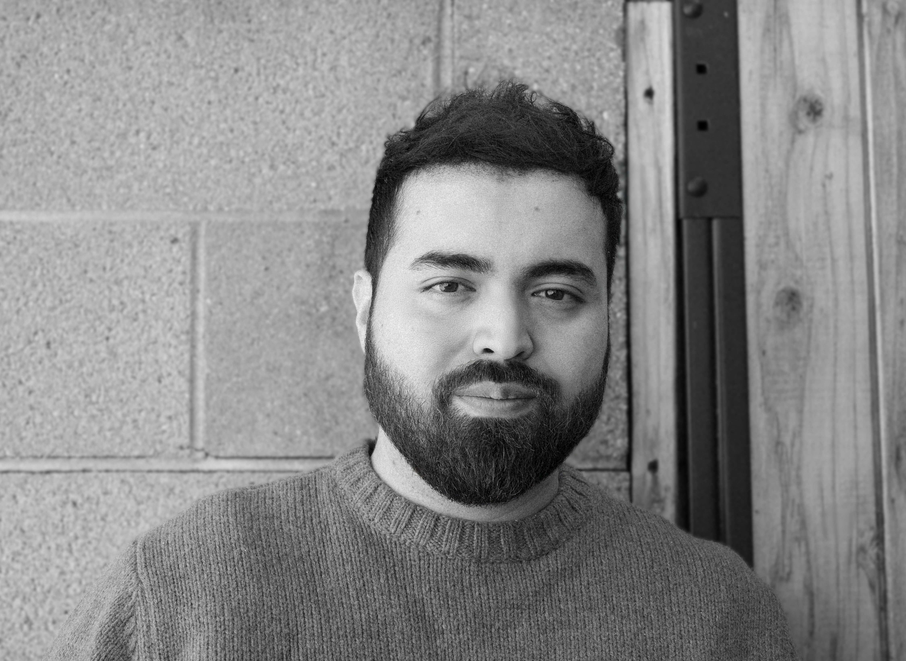

I’m Eduardo Chavez, a Los Angeles–based graphic designer focused on brand systems, campaign visuals, and digital touchpoints. I build identity-led assets that stay clear, premium, and usable across presentations, social, merch, and launch storytelling.
Graphic Design Portfolio
FEATURED WORK//
FEATURED WORK//
FEATURED WORK//
FEATURED WORK//
FEATURED WORK//
FEATURED WORK//
FEATURED WORK//
FEATURED WORK//
↓ PICK ANY CARD BELOW ↓
My Process
Ideation · Concept
Explore visual directions, define the communication goal, and build a concept that aligns the brand, audience, and rollout need.
Refinement
Refine typography, composition, color, and supporting graphics until the system feels cohesive, clear, and ready to hold up across real use.
Direction Approval
Present polished directions, incorporate feedback, and align on a final visual approach that can scale confidently into launch assets.
Production · Final Delivery
Prepare final artwork, export print and digital assets, and organize deliverables so every file is clean, consistent, and ready to launch.
About + Resume
Designer, system-builder, and visual storyteller.
Los Angeles-based graphic and packaging designer
I create identity-led visuals that feel clear, polished, and presentation-ready — from brand systems and campaign graphics to packaging that has to sell the idea before anyone reads the copy.
My work sits at the intersection of brand thinking and production reality. I care about typography, storytelling, rollout consistency, and the little details that make a concept feel premium in the real world, not just in a mockup.
Brand identity
Packaging systems
Typography
Presentation design
Production-ready execution
Experience
PhatMojo, LLC. — Packaging Design Manager
07.10.2018 - Present
Lead end-to-end packaging development for high-volume toy and consumer product lines while also contributing brand, presentation, and launch-facing graphic assets that support retail storytelling. Manage mechanicals, dielines, approvals, and production-ready artwork across multiple SKUs, while mentoring junior designers and partnering with global vendors and factories through handoff.
Kellogg and Huntley Galleries — Graphic Designer
04.01.2015 - 04.05.2018
Designed marketing collateral for university art gallery exhibitions. Created digital and print materials promoting events. Provided on-site support for gallery operations, visitor engagement, and artwork installation.
Education
Cal Poly Pomona — BFA Graphic Design · Minor Art History
Strengths
Brand Identity, Packaging, Typography, Creative Direction, 3D Renders, Prototyping, Production, Vendor Management
What I bring
A calm, systems-minded design process that helps brands stay visually sharp from concept development through final rollout.
Available for freelance, contract, and full-time opportunities across brand identity, packaging, campaign visuals, and presentation design.

Let’s work together
Available for freelance, contract, and full-time brand, graphic, and presentation design work.
Reach out for identity systems, campaign visuals, typography-driven layouts, and launch assets that need to feel clear, premium, and presentation-ready from day one.